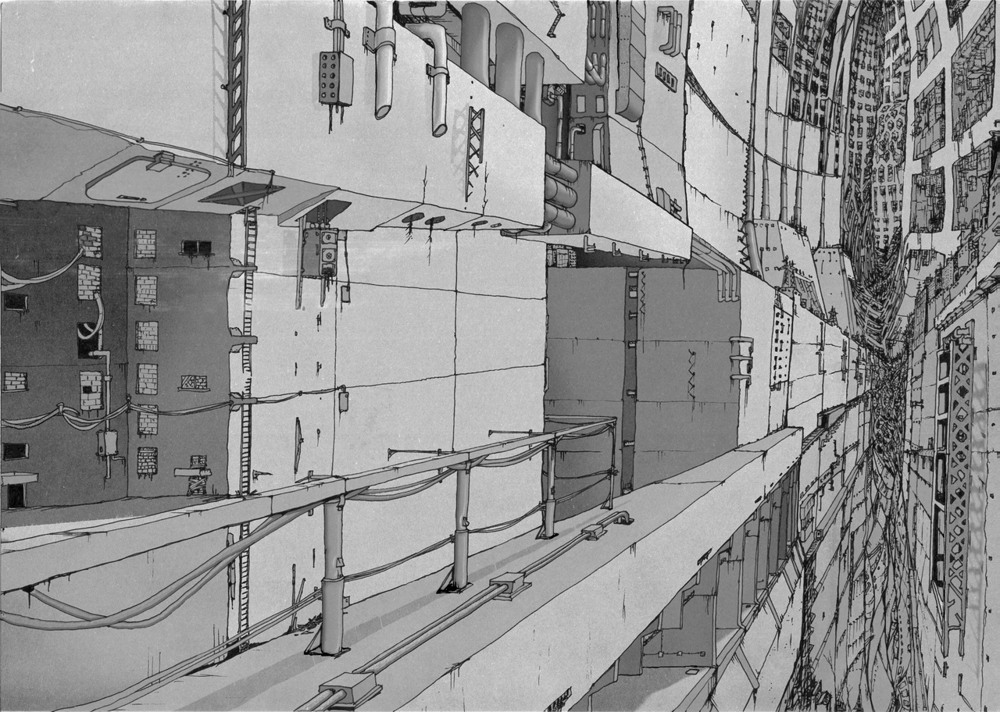

Гигагрущевка

Общее понятие
Общее понятие
Гигахрущёвка(Гигахрущ, ГХ) педставляет собой непостижимо огромную структуру, изнутри напоминающую панельный дом, откуда и берёт своё название. Простирается во все стороны – как вертикально, так и горизонтально. ГигаХрущ бесконечен абсолютно.
Теории о происхождении
Сотрудниками НИИ разработаны сотни теорий о происхождении Гигахруща, но ни одна из них не имеет неоспоримых доказательств. Найденные документы с “дохрущёвских” времен(если таковые вообще были) противоречат друг другу во всём: Начиная с разбега во временных рамках, места действия, и заканчивая историей самого возникновения.
Комитетом №6 выдвинуто предположение, что Гигахрущ вмещает в себя сразу все теории, как бы абсурдно это не звучало. В первую очередь, Комитет отталкивается от того, что наша Родина по природе своей непостоянна. По данным ГПМВ время и пространство на отдельных участках Гигахруща ведёт себя по разному. Компиляция исследований различных НИИ совместно с выборкой аналитики ГПМВ позволяет предположить, что Гигахрущ – полноценное мультипростнарство, вмещающее в себя миллиарды вселенных.